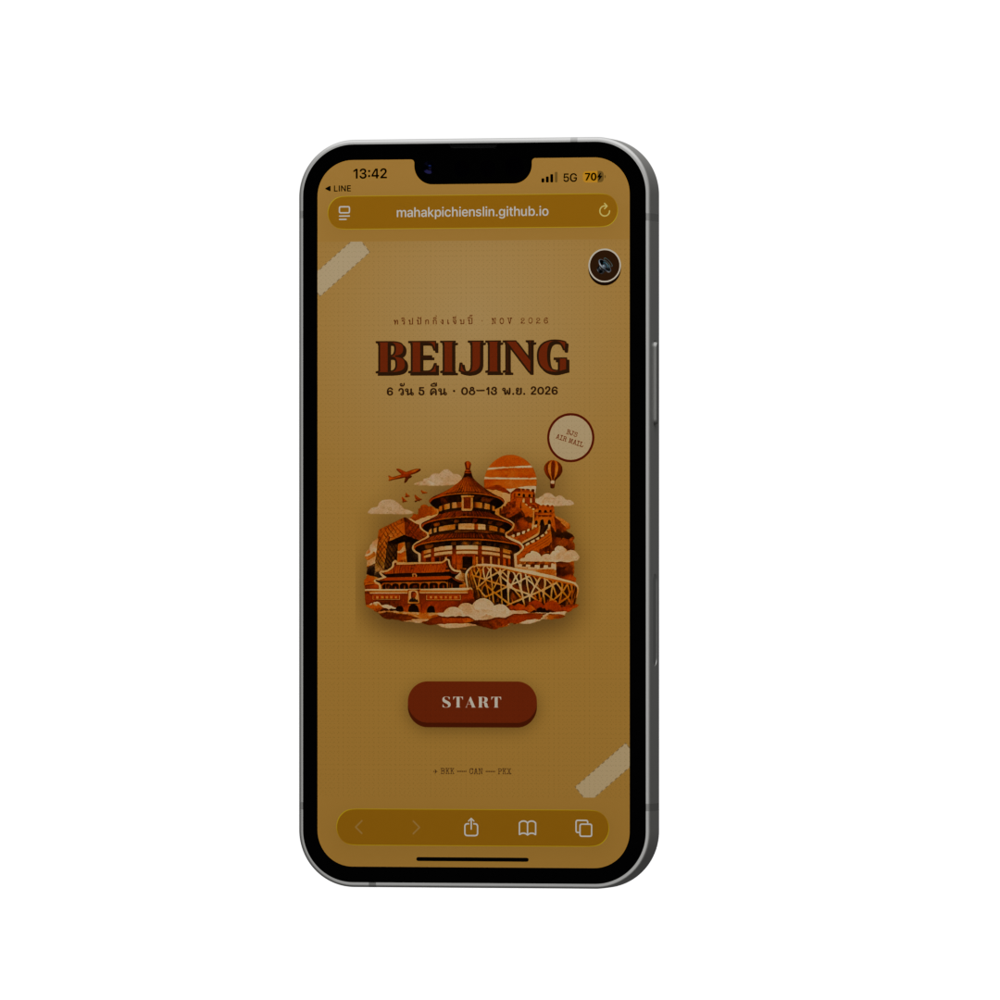
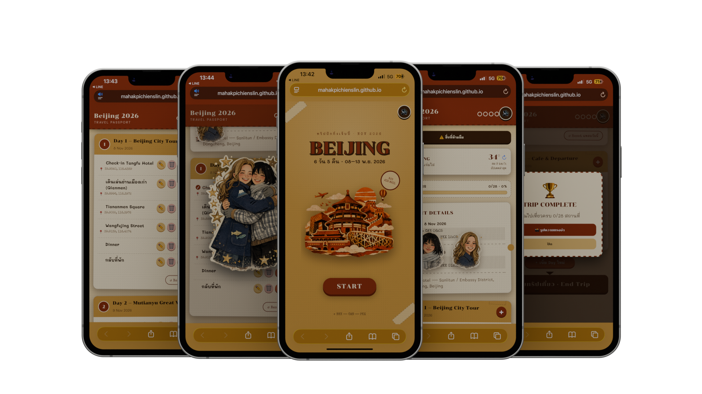
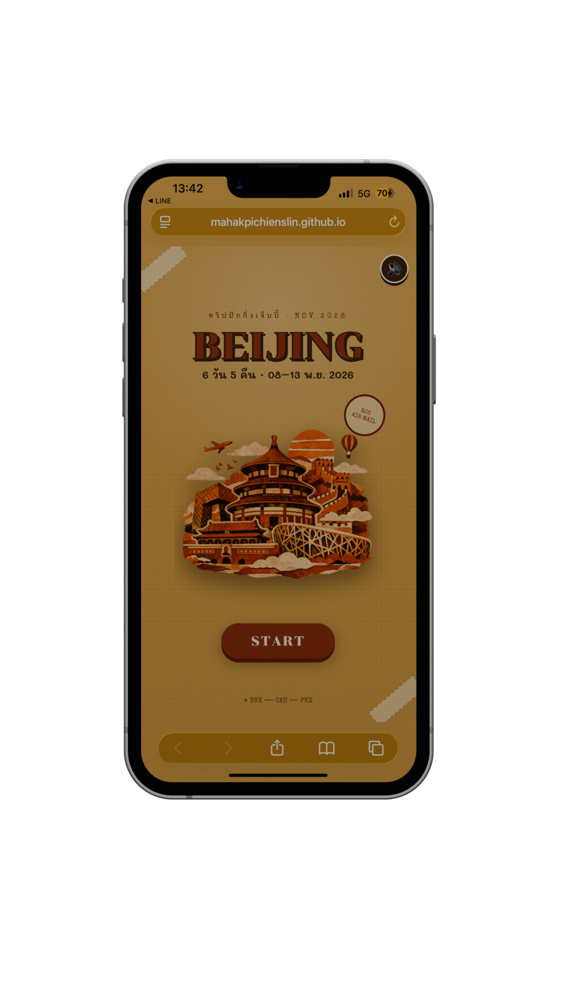
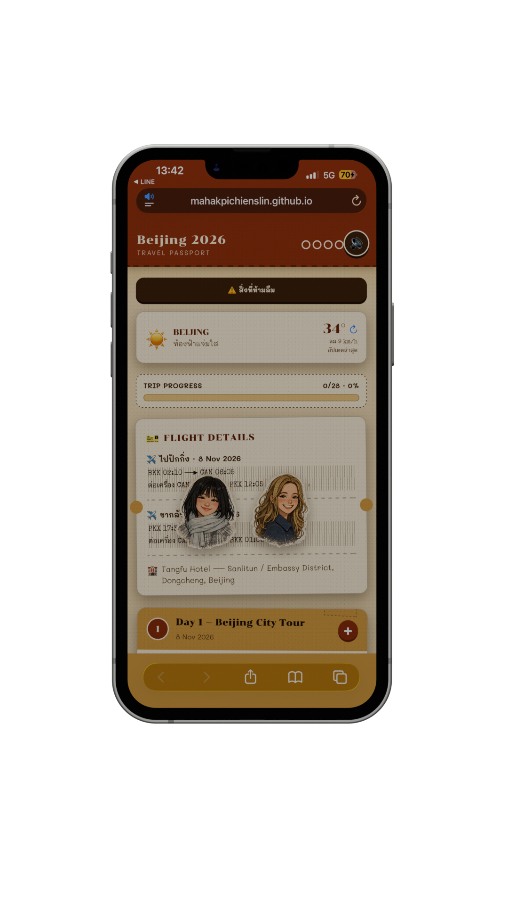
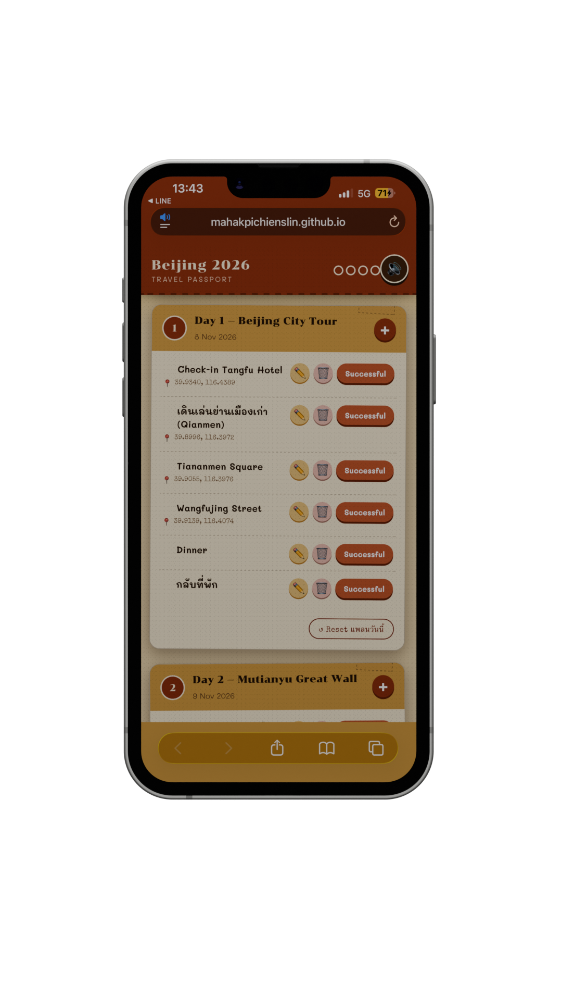
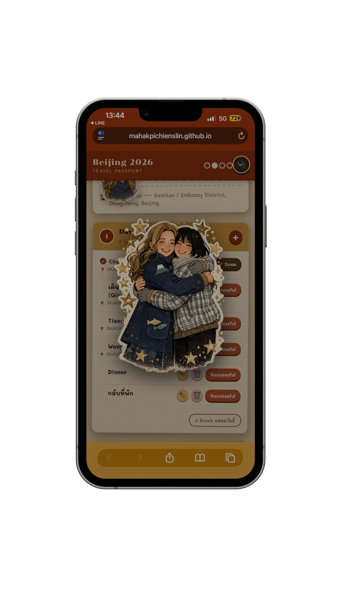

004 — Web App / Product Experience
Beijing Trip
Interactive Travel
Companion
A playful travel companion that transforms a traditional itinerary into an interactive journey with progress tracking, weather, sound, trip completion, and personal memories.


Overview
Beijing Trip is a personal browser-based travel companion created for a six-day trip to Beijing.
Instead of keeping the itinerary inside notes, screenshots, maps, and separate travel apps, the project brings the journey into one playful interactive experience.
My Role
I designed and developed the complete experience from concept and visual direction to interaction logic, responsive UI, persistent trip progress, weather integration, sound design, and deployment.
The Challenge
Most personal trip plans are functional but static. They tell you where to go, but they do not create a sense of progress, achievement, or memory.
The challenge was to make a practical itinerary feel playful without making it harder to use while travelling.
The Outcome
The final product works as a lightweight travel companion that combines practical trip information with game-like progression and emotional feedback.
It is accessible directly from a mobile browser and designed around the actual Beijing journey.
Product Concept
Turning an Itinerary Into a Journey
The project treats each travel location as part of a playable journey rather than a simple checklist.
Plan
Trip dates, flights, hotel and daily locations.
Explore
Follow the itinerary and discover each destination.
Complete
Mark visited locations and build trip progress.
Celebrate
Sound, animation and feedback make progress rewarding.
Remember
Finish the trip and create a personal travel story.
Development Process
From Travel Plan to Web Experience
Trip Planning
Organized the Beijing itinerary, flight details, hotel information and destinations into a clear travel structure.
Experience Design
Reimagined the itinerary as a playful travel passport rather than a conventional checklist.
Visual Identity
Developed a collage-inspired travel style using stamps, characters, paper textures and Beijing visual references.
Interaction
Built location completion, reset actions, progress tracking, sound feedback and trip states.
Utility Features
Added travel information such as flight details, weather status and persistent trip data.
Deploy & Iterate
Published the experience through GitHub Pages and continuously refined the interface as the real travel plan evolved.
Product Features
Built for the Actual Trip
Trip Passport
Presents the journey as a personal digital travel passport.
Progress Tracking
Completed locations are remembered throughout the trip.
Weather
Weather information is accessible directly from the travel interface.
Sound Feedback
Music and interaction sounds add personality and emotional feedback.
End Trip
The journey has a defined ending instead of simply disappearing after the final day.
Save Story
Travellers can turn selected trip memories into a shareable visual story.
Behind the Build
Designing for Mobile Travel
The interface was built around quick mobile interactions because the product is intended to be used while travelling rather than at a desk.

01 / PLANTravel Structure
Transforming raw itinerary information into structured daily travel data.

02 / UITravel Passport UI
Creating a playful visual system inspired by passports, stamps and travel memories.

03 / JAVASCRIPTInteraction Logic
Managing progress, state, user actions and persistent trip information.

04 / MOBILEReal-world Usage
Designing the experience around quick interactions while travelling.
Stack & Tools
Application structure
Responsive visual experience
Interaction & state logic
Persistent trip progress
App-like mobile experience
Web deployment
Live Project
Explore Beijing Trip
Open the live travel companion and experience the interactive Beijing journey directly in your browser.